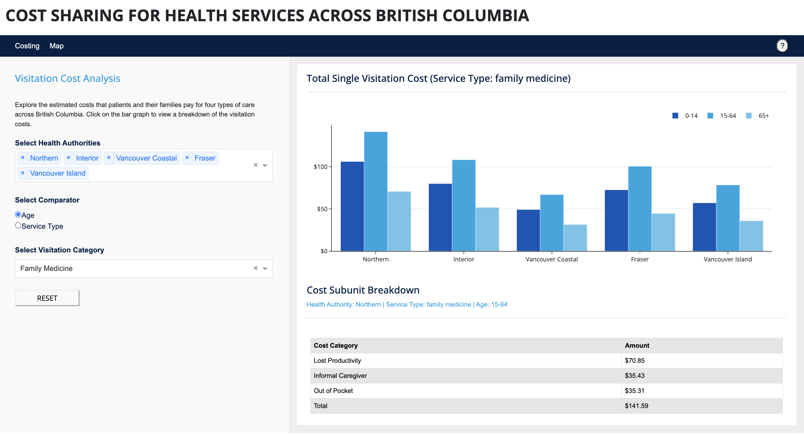

RTVS
June 2023 / Developer

Technologies: Python, Pandas, Plotly, Dash, Google Cloud Platform, Containerization
Company: UBC Digital Emergenct Medicine,

The Problem
...
My Solution

Compare travel distance from each Community Health Service Area in BC to the nearest in-person clinical location.